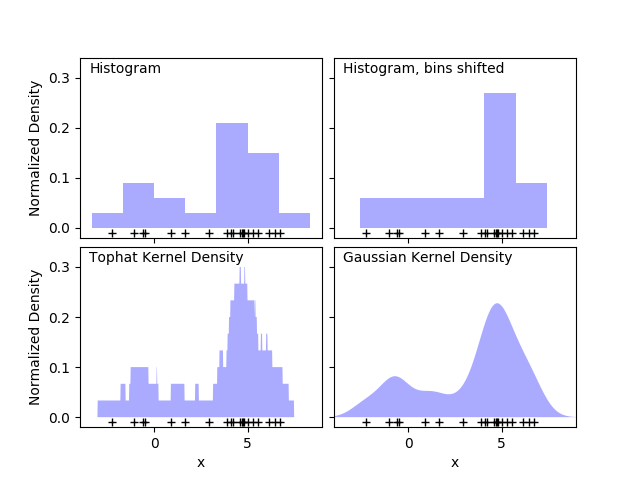
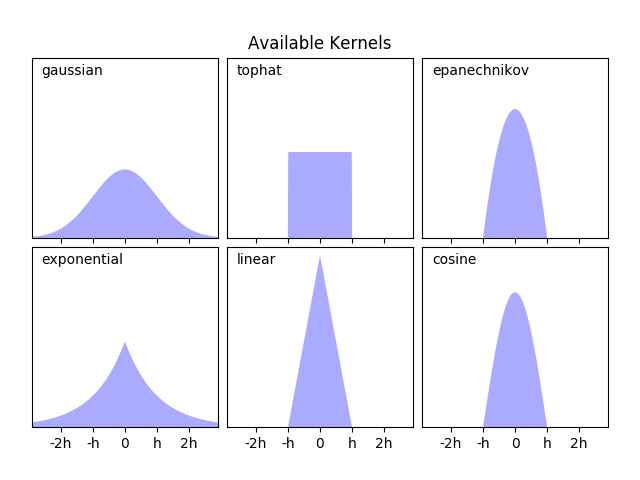
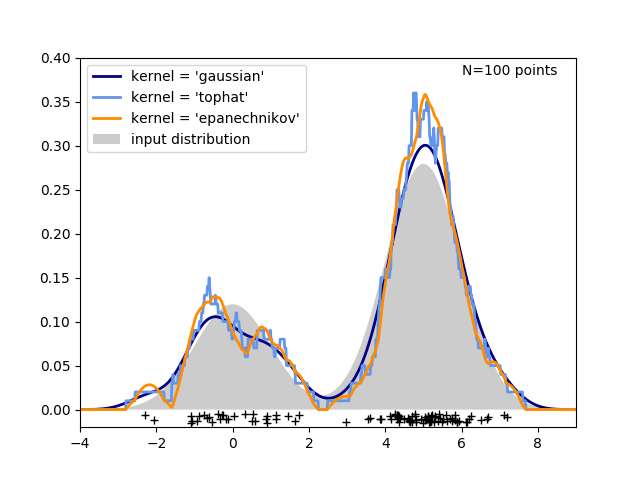

Note
Click here to download the full example code or run this example in your browser via Binder
1.23.11. Simple 1D Kernel Density Estimation¶
This example uses the sklearn.neighbors.KernelDensity class to
demonstrate the principles of Kernel Density Estimation in one dimension.
The first plot shows one of the problems with using histograms to visualize the density of points in 1D. Intuitively, a histogram can be thought of as a scheme in which a unit “block” is stacked above each point on a regular grid. As the top two panels show, however, the choice of gridding for these blocks can lead to wildly divergent ideas about the underlying shape of the density distribution. If we instead center each block on the point it represents, we get the estimate shown in the bottom left panel. This is a kernel density estimation with a “top hat” kernel. This idea can be generalized to other kernel shapes: the bottom-right panel of the first figure shows a Gaussian kernel density estimate over the same distribution.
Scikit-learn implements efficient kernel density estimation using either
a Ball Tree or KD Tree structure, through the
sklearn.neighbors.KernelDensity estimator. The available kernels
are shown in the second figure of this example.
The third figure compares kernel density estimates for a distribution of 100 samples in 1 dimension. Though this example uses 1D distributions, kernel density estimation is easily and efficiently extensible to higher dimensions as well.
- 
- 
- 
# Author: Jake Vanderplas <jakevdp@cs.washington.edu>
#
import numpy as np
import matplotlib
import matplotlib.pyplot as plt
from distutils.version import LooseVersion
from scipy.stats import norm
from sklearn.neighbors import KernelDensity
# `normed` is being deprecated in favor of `density` in histograms
if LooseVersion(matplotlib.__version__) >= '2.1':
density_param = {'density': True}
else:
density_param = {'normed': True}
# ----------------------------------------------------------------------
# Plot the progression of histograms to kernels
np.random.seed(1)
N = 20
X = np.concatenate((np.random.normal(0, 1, int(0.3 * N)),
np.random.normal(5, 1, int(0.7 * N))))[:, np.newaxis]
X_plot = np.linspace(-5, 10, 1000)[:, np.newaxis]
bins = np.linspace(-5, 10, 10)
fig, ax = plt.subplots(2, 2, sharex=True, sharey=True)
fig.subplots_adjust(hspace=0.05, wspace=0.05)
# histogram 1
ax[0, 0].hist(X[:, 0], bins=bins, fc='#AAAAFF', **density_param)
ax[0, 0].text(-3.5, 0.31, "Histogram")
# histogram 2
ax[0, 1].hist(X[:, 0], bins=bins + 0.75, fc='#AAAAFF', **density_param)
ax[0, 1].text(-3.5, 0.31, "Histogram, bins shifted")
# tophat KDE
kde = KernelDensity(kernel='tophat', bandwidth=0.75).fit(X)
log_dens = kde.score_samples(X_plot)
ax[1, 0].fill(X_plot[:, 0], np.exp(log_dens), fc='#AAAAFF')
ax[1, 0].text(-3.5, 0.31, "Tophat Kernel Density")
# Gaussian KDE
kde = KernelDensity(kernel='gaussian', bandwidth=0.75).fit(X)
log_dens = kde.score_samples(X_plot)
ax[1, 1].fill(X_plot[:, 0], np.exp(log_dens), fc='#AAAAFF')
ax[1, 1].text(-3.5, 0.31, "Gaussian Kernel Density")
for axi in ax.ravel():
axi.plot(X[:, 0], np.full(X.shape[0], -0.01), '+k')
axi.set_xlim(-4, 9)
axi.set_ylim(-0.02, 0.34)
for axi in ax[:, 0]:
axi.set_ylabel('Normalized Density')
for axi in ax[1, :]:
axi.set_xlabel('x')
# ----------------------------------------------------------------------
# Plot all available kernels
X_plot = np.linspace(-6, 6, 1000)[:, None]
X_src = np.zeros((1, 1))
fig, ax = plt.subplots(2, 3, sharex=True, sharey=True)
fig.subplots_adjust(left=0.05, right=0.95, hspace=0.05, wspace=0.05)
def format_func(x, loc):
if x == 0:
return '0'
elif x == 1:
return 'h'
elif x == -1:
return '-h'
else:
return '%ih' % x
for i, kernel in enumerate(['gaussian', 'tophat', 'epanechnikov',
'exponential', 'linear', 'cosine']):
axi = ax.ravel()[i]
log_dens = KernelDensity(kernel=kernel).fit(X_src).score_samples(X_plot)
axi.fill(X_plot[:, 0], np.exp(log_dens), '-k', fc='#AAAAFF')
axi.text(-2.6, 0.95, kernel)
axi.xaxis.set_major_formatter(plt.FuncFormatter(format_func))
axi.xaxis.set_major_locator(plt.MultipleLocator(1))
axi.yaxis.set_major_locator(plt.NullLocator())
axi.set_ylim(0, 1.05)
axi.set_xlim(-2.9, 2.9)
ax[0, 1].set_title('Available Kernels')
# ----------------------------------------------------------------------
# Plot a 1D density example
N = 100
np.random.seed(1)
X = np.concatenate((np.random.normal(0, 1, int(0.3 * N)),
np.random.normal(5, 1, int(0.7 * N))))[:, np.newaxis]
X_plot = np.linspace(-5, 10, 1000)[:, np.newaxis]
true_dens = (0.3 * norm(0, 1).pdf(X_plot[:, 0])
+ 0.7 * norm(5, 1).pdf(X_plot[:, 0]))
fig, ax = plt.subplots()
ax.fill(X_plot[:, 0], true_dens, fc='black', alpha=0.2,
label='input distribution')
colors = ['navy', 'cornflowerblue', 'darkorange']
kernels = ['gaussian', 'tophat', 'epanechnikov']
lw = 2
for color, kernel in zip(colors, kernels):
kde = KernelDensity(kernel=kernel, bandwidth=0.5).fit(X)
log_dens = kde.score_samples(X_plot)
ax.plot(X_plot[:, 0], np.exp(log_dens), color=color, lw=lw,
linestyle='-', label="kernel = '{0}'".format(kernel))
ax.text(6, 0.38, "N={0} points".format(N))
ax.legend(loc='upper left')
ax.plot(X[:, 0], -0.005 - 0.01 * np.random.random(X.shape[0]), '+k')
ax.set_xlim(-4, 9)
ax.set_ylim(-0.02, 0.4)
plt.show()
Total running time of the script: ( 0 minutes 0.490 seconds)